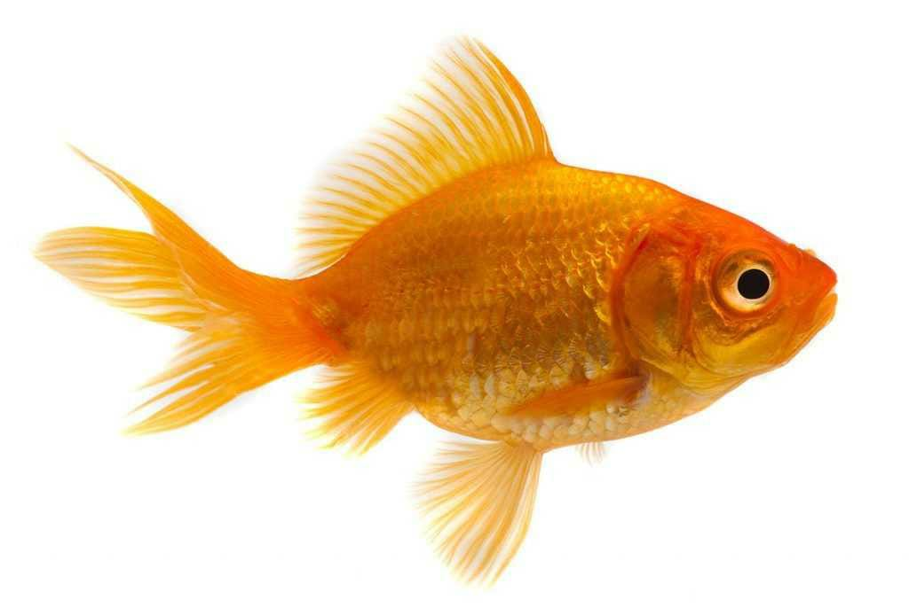

Institute of Software Engineering
Usage of Cascade Style Sheets - 01

Goldfish are small freshwater fish that are commonly kept as pets in aquariums and ponds. They are known for their bright orange or golden color, although they can also appear in white, black, red, or mixed patterns.
Goldfish originally come from East Asia and have been domesticated for hundreds of years.They belong to the carp family and can live for a long time if cared for properly ,sometimes 10,15 years or even more
Goldfish need clean water, enough space to swim, proper food, and oxygen to stay healthy. They usually eat flakes, pellets, or small plant and animal matter.
Goldfish are peaceful, social, and easy to recognize, which makes them one of the most popular pet fish in the world.